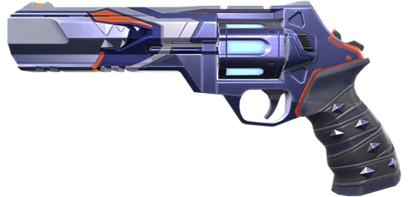

-
Real NameYoru
-
OriginJapan
-
AffiliationPalorant Protocol
-
 Duelist
MaleRadiantNumber 15
Duelist
MaleRadiantNumber 15
Contract Skin

Biography
"Japanese native Yoru rips holes straight through reality to
infiltrate enemy lines unseen. Using deception and aggression in
equal measure, he gets the drop on each target before they know
where to look."
Yozu is a sneaky duelist who thrives on deception. With Fakeout to send decoys, Blindside flashes, and a teleporting Gatecrash , he creates chaos and slips through defenses. His ult, Dimensional Drift, lets him roam the map unseen—perfect for surprise plays.
Abilities
Blindside
EQUIP to rip an unstable
dimensional fragment from reality.
FIRE to throw the
fragment, activating a flash that winds up once it collides
with a hard surface in world.